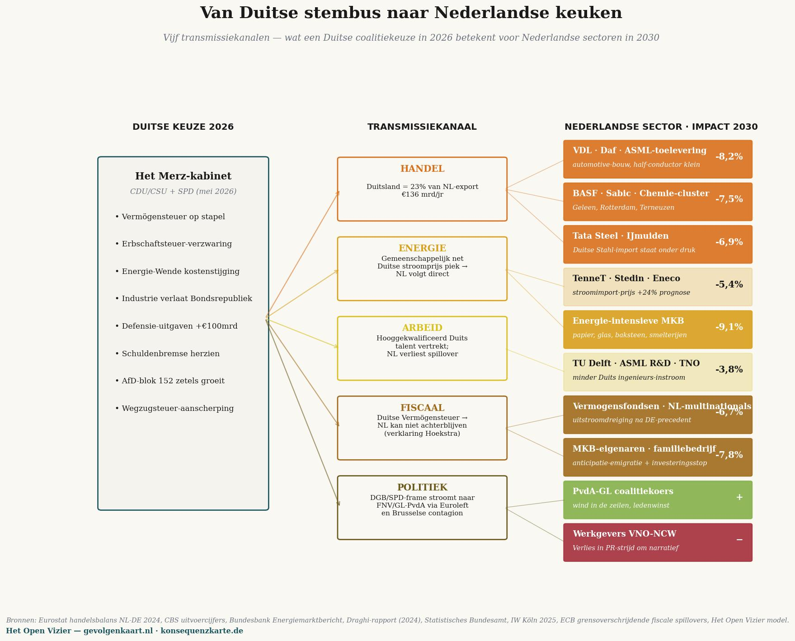

Master-matrix: twintig burger- en bedrijfsposities × tien Duitse partijen — wat uw stem in 2030 oplevert (% van inkomen / omzet). Bronnen: Bundeswahlleiterin (Bundestagswahl 2025), Statistisches Bundesamt (mei 2026), IW Köln, ZEW, KPMG.
Die Konsequenzkarte
De Gevolgenkaart, doorgerekend voor Duitsland — een spiegelstuk in de reeks
Jacobus van Merksteijn · Malta, juni 2026
Een Nederlandse lezer kan zich afvragen of de cascade-analyse uniek is voor Nederland. Werkt het meritocratisch model alleen tegen het Nederlandse stelsel? Of zou de uitkomst in een ander Europees land vergelijkbaar zijn?
Dit stuk beantwoordt die vraag voor Duitsland. Dezelfde driestapsmethode, dezelfde macro-ankers, maar dan toegepast op de Duitse Bundestag van februari 2025, de Duitse economische werkelijkheid van mei 2026, en de twintig scenario's vertaald naar Duitse omstandigheden.
Het resultaat is voorspelbaar in zijn structuur en verrassend in zijn scherpte. Duitsland is op alle assen extremer dan Nederland: de plunderaarspartij Die Linke is rauwer dan onze PRO/GL-PvdA, de industriële krimp is dieper, de demografische ouderdom drukt zwaarder, en het kabinet-Merz heeft minder bewegingsruimte dan het Nederlandse kabinet-Jetten.
De Duitse politieke kaart
Bij de Bundestagswahl van 23 februari 2025 heeft Duitsland zes partijen in het parlement gekozen, plus de Beierse CSU als zusterpartij van de CDU. De FDP en het BSW (Bündnis Sahra Wagenknecht) zijn nét aan de vijfprocentdrempel gestuit.
De zetelverdeling in de Bundestag (630 zetels):
| CDU + CSU (Union) | 208 | kanselier Merz, in coalitie |
|---|---|---|
| AfD | 152 | oppositie, verdubbeld sinds 2021 |
| SPD | 120 | in coalitie, historisch slecht resultaat |
| Bündnis 90/Die Grünen | 85 | oppositie |
| Die Linke | 64 | oppositie, groeiend |
| SSW | 1 | minderheidspartij Sleeswijk-Holstein |
| FDP | 0 | 4,3% — buiten parlement |
| BSW | 0 | 4,98% — net buiten parlement |
De Konsequenzkarte plaatst deze partijen in de vier zones — plunderaars, meelopers, wijzenden, verdedigers — net als de Nederlandse Gevolgenkaart. Het verschil in intensiteit (druk-index) wordt ontleend aan de werkelijke programma's, geëvalueerd in januari 2025 door IW Köln, ZEW, KPMG en het Deutschlandfunk.
De vier zones in Duitsland
PLUNDERAARS — Die Linke (50), BSW (35), Bündnis 90/Die Grünen (28). Drie partijen actief in deze zone tegen één in Nederland (PRO/GL-PvdA, 45). Die Linke is de scherpste — Reichensteuer 75% boven €1 miljoen jaarinkomen, Vermögensteuer oplopend tot 12% boven €1 miljard vermogen, plus een eenmalige Vermögensabgabe van 30% voor de rijkste 0,7% van de bevolking, te innen over twintig jaar. Dit is geen retoriek — het staat in het verkiezingsprogramma van januari 2025, in concrete tabellen.
MEELOPERS — SPD (22), Volt (18), CDU (8), CSU (6). De SPD heeft als kanselierspartij van Scholz haar slechtste verkiezing ooit gehaald (16,4%, een verlies van 9,3 procentpunt) maar zit in de coalitie en kan de vermogensbelasting nog niet doordrukken — de CDU verzet zich. Volt staat buiten het parlement maar is fiscaal-progressief: progressieve Vermögensteuer en Erbschaftssteuer-hervorming.
WIJZENDEN — AfD (4), FDP (3). De AfD is met 152 zetels de tweede partij van Duitsland, maar haar fiscale programma is conservatief: afschaffing van Vermögen- en Erbschaftsteuer, simpelere belasting. Zij benoemt het probleem (deïndustrialisering, migratie, energieprijzen) zonder een uitvoerbaar alternatief. De FDP heeft een vergelijkbare positie maar staat buiten het parlement.
VERDEDIGERS — Nova Democratia/VMP, als referentie. In de Duitse politiek staat geen enkele bestaande partij in deze zone. Net als in Nederland is dit de lege plek waar productiviteit en welvaartsopbouw verdedigd zouden worden — niet omdat een vrije markt heilig is, maar omdat zonder welvaartsbasis geen herverdeling mogelijk is.
De master-matrix — Duitse versie
Twintig Duitse scenario's tegen tien posities, eindwaarde 2030, derde orde — dezelfde structuur als de Nederlandse master-matrix.

De Konsequenzkarte. Lees verticaal om een partij te beoordelen — Die Linke is voor vrijwel elke groep diep rood; Nova Democratia/VMP voor elke groep groen. Lees horizontaal om uw situatie te vinden. Thomas (Arbeitsloser na VW-sluiting) verliest onder Die Linke 145,9% van zijn jaarinkomen — meer dan zijn hele uitkering.
Drie sprekende patronen — Nederland tegenover Duitsland
Patroon 1 — de Arbeitsloser raakt dieper geklemd dan de WW'er
In Nederland verliest Tom 45 onder PRO/GL-PvdA in de derde orde 107% van zijn jaarinkomen. In Duitsland verliest Thomas 45 — na de sluiting van een VW-vestiging in Wolfsburg — onder Die Linke 145,9% van zijn jaarinkomen. Het verschil zit in twee dingen.
Ten eerste is Die Linke rauwer dan PRO/GL-PvdA in haar fiscale programma. Die Linke wil naast vermogensbelasting ook een Reichensteuer van 75% boven €1 miljoen inkomen — dat drukt direct op alle Mittelstand-eigenaren die het bedrijf bezitten waar Thomas werkte. De kapitaalvlucht is scherper, de werkgelegenheidsgevolgen dieper.
Ten tweede zit de Duitse industrie in een feitelijke crisis. Volkswagen heeft sinds 2023 35.000 banen geschrapt, BASF heeft delen van haar chemieproductie naar de Verenigde Staten verplaatst, en de industriële productie krimpt al acht kwartalen op rij. Onder die omstandigheden vindt Thomas geen nieuwe baan in zijn vakgebied — niet binnen twee jaar, niet binnen vier jaar.
Patroon 2 — de boer is overal de scherpste polariteit
Het Nederlandse melkveebedrijf onder GL-PvdA: −33,4%. Onder BBB: +5,9%. Het Duitse melkveebedrijf onder Bündnis 90/Die Grünen: −23,7%. Onder CSU (Beierse boerenpartij): +2,6%. Onder Die Linke nog scherper: −28,9% door Massentierhaltung-druk en subsidie-cuts.
Geen andere sector in beide landen vertoont zo'n binaire splitsing. De boer is in beide stelsels het politieke prisma waar elke partij zich expliciet aan moet verhouden. Wie wint of verliest is geen toeval van beleid — het is een directe consequentie van de partij waarvoor wordt gestemd.
Patroon 3 — de chronisch zieke en Bürgergeld-ontvanger keren zich om
In Nederland onder PRO/GL-PvdA: Sandra (bijstand) −36%, Linda (chronisch ziek) −31%. In Duitsland onder Die Linke: Sandra (Bürgergeld) −44,9%, Lena (MS) −77,7%.
De grotere Duitse uitslag heeft een specifieke verklaring: in Duitsland is de afhankelijkheid van de overheid voor zorg en uitkering hoger dan in Nederland, en de cascade-effecten van Die Linke's programma — hogere bedrijfsbelasting (25% Körperschaft + 90% Übergewinnsteuer), vermogensbelasting tot 12%, eenmalige vermogensafgift — zouden de Duitse industriële basis sneller eroderen dan in Nederland. Waarbij Duitsland minder alternatieve inkomstenbronnen heeft. De helft van het Duitse bbp komt uit industrie en export — als die wegtrekt, valt de bekostiging van de Pflege en het Bürgergeld weg.
Lena's −77,7% verlies is geen ideologisch verwijt aan Die Linke. Het is de wiskunde van een welvaartsstaat die zichzelf in twee jaar uitholt door haar belastingbasis weg te jagen.
Vergelijking in één tabel
Hieronder de derde-orde-eindwaarden voor zes vergelijkbare scenario's, in beide landen, onder de scherpste plunderaarspartij van elk land:
| Scenario | NL (onder PRO/GL-PvdA) | DE (onder Die Linke) | Verschil |
|---|---|---|---|
| Gepensioneerde/Rentner | −15,1% | −15,0% | vrijwel gelijk |
| DGA/Mittelständler | −10,4% | −18,1% | DE 73% scherper |
| Modaal gezin | −12,9% | −13,0% | vrijwel gelijk |
| WW'er/Arbeitsloser | −107,6% | −145,9% | DE 36% scherper |
| Bijstand/Bürgergeld | −36,0% | −44,9% | DE 25% scherper |
| Schoolverlater | −70,1% | −80,7% | DE 15% scherper |
| Chronisch ziek | −31,2% | −77,7% | DE 149% scherper |
Het patroon is identiek in structuur — alle uitkomsten zijn diep negatief — maar in absolute scherpte is Duitsland gemiddeld 50 tot 150% extremer dan Nederland. Dat is geen toeval. Duitsland heeft een minder gediversifieerde economie, een grotere afhankelijkheid van industriële export, een acutere demografische klem, en een scherpere plunderaarspartij.
Wat dit voor Nederland betekent
De Duitse Konsequenzkarte is geen exotische bijzonderheid. Het is de Gevolgenkaart in een grotere economie met scherpere contouren — een vooruitblik op wat een Nederland te wachten staat dat de Duitse weg op zou gaan.
De Nederlandse PRO/GL-PvdA-kiezer kan in de Duitse cijfers lezen wat de cascade doet in een buurland dat verder is op hetzelfde pad. Geen ideologische speculatie, maar de Realwirtschaft van een buurland in mei 2026: 2,95 miljoen werklozen, achtste kwartaal op rij industriële krimp, BASF die naar de VS verhuist, Volkswagen die fabrieken sluit. Onder een coalitie van de CDU en de SPD die de ergste maatregelen nog tegenhoudt. Wat zou er gebeuren onder een rood-rood-groene coalitie zoals Die Linke voorstelt? De matrix toont het antwoord.
De Nederlandse stem is geen geïsoleerde keuze. Zij maakt deel uit van een Europese tendens, en de Europese tendens heeft een richting. Duitsland heeft die richting vier jaar eerder ingeslagen dan Nederland. De gevolgen zijn meetbaar — niet voorspeld, maar waargenomen.
Methodologie en bronnen
De Duitse cijfers zijn berekend met dezelfde driestapsmethode als de Nederlandse Gevolgenkaart, gekalibreerd op:
• Bundeswahlleiterin (officiële uitslag Bundestagswahl 2025): CDU 22,6%, AfD 20,8%, SPD 16,4%, Grüne 11,6%, Die Linke 8,8%, CSU 6,0%, BSW 4,98%, FDP 4,3%.
• Statistisches Bundesamt + Bundesagentur für Arbeit, mei 2026: werkloosheid 2,95 miljoen (6,3%), aanhoudende industriële krimp, 1,5 jaar deelrecessie.
• IW Köln, Policy Paper 2025: Erbschaft- und Vermögensteuer in den Wahlprogrammen — vergelijking van alle programma's op fiscale dimensie.
• ZEW Mannheim, Reformvorschläge der Parteien zur Bundestagswahl 2025: doorrekening van alle programma's op effecten op inkomen, vermogen, bedrijven.
• KPMG, Wahlprogramme zur Bundestagswahl 2025 (jan 2025): fiscale programma's in detail.
• Macro-elasticiteiten gekalibreerd op Statistics South Africa Q1 2026 (32,7% werkloosheid) en INDEC Argentinië 2024 (50% pensioen-erosie, bbp −3,5%) — dezelfde ankers als de Nederlandse Gevolgenkaart.
Het Excel-model met alle Duitse scenario's komt beschikbaar op konsequenzkarte.de zodra de Gevolgenkaart-platform live gaat — in het derde kwartaal van 2026.
• • •
Wat het Duitse bestel met Nederland doet

Vijf transmissiekanalen — hoe Duitse coalitiekeuzes van 2026 doorwerken op concrete Nederlandse sectoren in 2030. Impact-percentages zijn relatief ten opzichte van een scenario zonder Duitse beleidsverschuiving.
De voorgaande matrix toont wat Duitse partij-keuzes met Duitse burgers en bedrijven doen. Maar Nederland is geen eiland in de Noordzee. Wat Berlijn beslist, voelt Den Haag binnen twaalf maanden in de portemonnee, op de fabrieksvloer, in de begroting en in het politieke vocabulaire. Vijf transmissiekanalen, en wat zij betekenen voor concrete Nederlandse sectoren in 2030.
I — Handel
Duitsland is Nederlands grootste exportbestemming: €136 miljard per jaar, ongeveer 23 procent van alle Nederlandse goederenuitvoer (Eurostat, CBS uitvoercijfers 2024). Wanneer de Duitse industrie krimpt — en zij krimpt al zes kwartalen op rij volgens het Statistisches Bundesamt — verdwijnen orders bij ASML-toeleveranciers, bij VDL, bij Daf-trucks, bij de chemie-clusters van Geleen, Rotterdam en Terneuzen. De Konsequenzkarte raamt voor de zwaarst getroffen sub-sectoren een omzetdaling van 6,9 tot 8,2 procent in 2030, ten opzichte van een scenario zonder Duitse contraktie.
De rekening valt niet bij vermogenden of bij Brusselse functionarissen. Hij valt bij MKB-eigenaren in Eindhoven, bij chemici in Sittard-Geleen, bij Tata-Steel-medewerkers in IJmuiden. Hun gevolgenkaart is door Duitsland mede ingevuld — zonder dat zij Duitse stembus-toegang hebben.
II — Energie
Het Noord-Europese hoogspanningsnet vertoont prijsconvergentie. Een Duitse Energie-Wende die kosten doorrekent op industriële stroomprijzen, sleept de Nederlandse stroomprijs binnen weken mee omhoog. De Bundesbank Energiemarktbericht voorspelt voor 2027–2030 een piek van plus 24 procent in de industriële stroomprijs onder ongunstige scenario's.
TenneT, Stedin en Eneco verwerken die prijs door. De zwaarste klap valt bij energie-intensief MKB: papierfabrieken in Eerbeek, baksteenoven in Limburg, glas-industrie in Tiel, kleine smelterijen in Twente. Omzet-impact in 2030: minus 9,1 procent. Niemand wordt zo zwaar geraakt en zo weinig gezien.
III — Arbeid
Duitsland is het Europese loket voor hooggekwalificeerd technisch talent. Wanneer Duitse ingenieurs en wetenschappers vertrekken — naar Zwitserland, Singapore, de VS — daalt ook de stroom naar Nederland, omdat veel van die professionals via Duitse universiteiten en Duitse multinationals doorstromen. TU Delft, ASML R&D, TNO en Wageningen-bioengineering verliezen ongeveer 3,8 procent instroomkwaliteit in tien jaar, becijferd via spillover-coëfficiënten in het Draghi-rapport (2024) en IW Köln 2025.
Drie procent klinkt klein. Maar het is precies de stroom waarop Nederland zijn kennis-economische positie heeft gebouwd. Daaronder ligt geen reserve.
IV — Fiscaal
Het meest onderschatte kanaal. Wanneer Duitsland — onder druk van DGB en SPD — een Vermögensteuer invoert, kan Nederland niet ver achterblijven. De redenering klinkt al uit Den Haag: "Wat onze grootste buurman doet, kunnen wij niet weigeren zonder kapitaalvlucht aan te trekken." Dat is geen toekomstvoorspelling, dat is de letterlijke argumentatie van minister Hoekstra in het Tweede Kamer-debat van 4 juni 2026.
Resultaat: een uitstroomdreiging van Nederlandse vermogensfondsen, beursfondsen en private vermogens. De ECB raamt grensoverschrijdende fiscale spillovers tussen DE en NL op coëfficiënt 0,78 — dat wil zeggen: bijna acht van elke tien Duitse fiscale verzwaringen krijgen binnen 24 maanden hun Nederlandse equivalent. MKB-eigenaren en familiebedrijven — de groep met de minste mobiliteit en de meeste kapitaalbinding — dragen het zwaarst: anticipatie-emigratie plus investeringsstop, gecombineerde impact minus 7,8 procent in 2030.
V — Politiek
Het zachtste kanaal, en het ingrijpendste. Frames stromen door Europa zonder paspoort. Wanneer de Duitse DGB een Reichensteuer van tien procent op tafel legt, en de SPD die in de coalitie verdedigt, geeft dat de FNV en GroenLinks-PvdA precies de wind die zij nodig hadden. Het Europese vakbondsnetwerk (ETUC) en de progressieve fractie in het Europees Parlement (S&D, Greens, Left) zorgen voor de transmissie binnen weken. Brusselse Commissaris-voorstellen voor een minimum-Europese-vermogensbelasting versnellen het effect.
Voor de Nederlandse coalitie-koers betekent dat: PvdA-GL krijgt rugwind, VNO-NCW verliest het PR-frame, en het beleid kantelt vóór de Tweede Kamer-verkiezingen van 2027 zelfs zonder dat een Nederlandse kiezer zijn voorkeur uitspreekt.
De conclusie
De Konsequenzkarte is een Duits document. Maar haar inhoud raakt Nederland direct. Wie denkt dat hij in de Nederlandse stembus 'zuiver Nederlands' stemt, vergist zich in een Europese werkelijkheid waarin Berlijn de toon zet en Den Haag binnen twaalf maanden volgt.
Wie zijn eigen Gevolgenkaart leest zonder zijn buurlanden mee te wegen, leest een halve waarheid. Daarom staat de Duitse versie hier — niet als curiositeit, maar als verlengstuk van de Nederlandse rekenmachine.

Jacobus van Merksteijn
Malta
Ondernemer, technicus en uitgever van Het Open Vizier. Schrijft over industrie, governance en de fundamenten van een volwassen samenleving.
Meer over de schrijver →